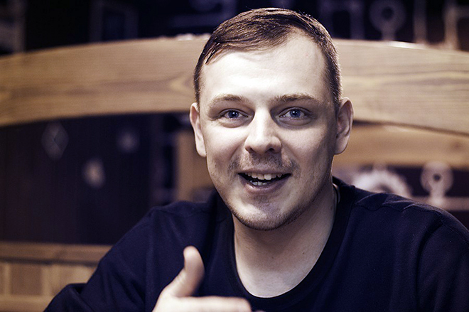
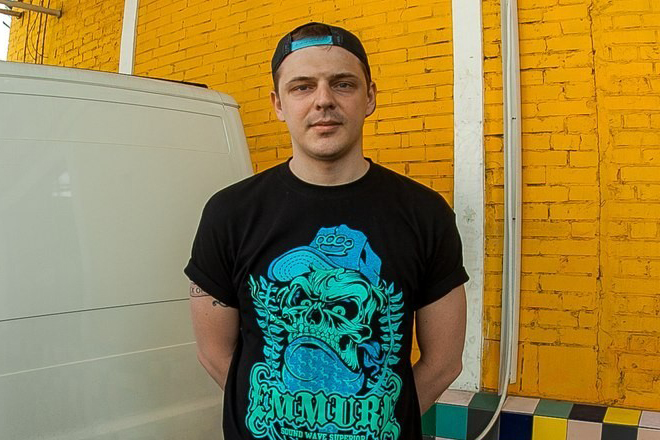
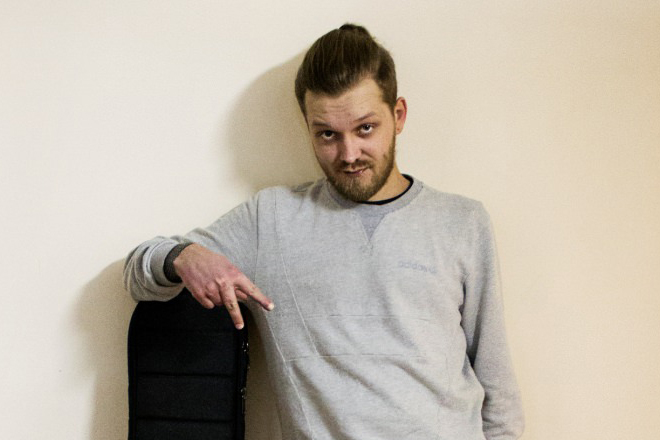

После выхода «Смачных ништяков» музыканты задумались о передислокации. Они понимали, что добиться настоящего успеха, оставаясь в родной Астрахани, будет невозможно. Единогласным решением местом нового обитания Anacondaz стала Москва. Во время одной из тусовок музыканты познакомились с Иваном Алексеевым, более известным под никнеймом Noize MC. Ребята сошлись характерами, что вылилось в совместную композицию «Пох*исты».

В 2011 году группа решила выпустить мини-альбом «Эволюция», в котором бы воплотились все те впечатления, что были получены после переезда. Решение оказалось успешным, поскольку из 5 композиций, входящих в состав пластинки, 4 оказались хитовыми: «69», «Эволюция», «Дома посижу» и «Всем п*здец». Параллельно один из вокалистов – Сергей Карамушкин — пробует себя на просторах онлайн-баттловой площадки Hip-Hop.ru. Также 2011 год запомнился поклонникам коллектива выпуском первого клипа «69», срежиссированного Русланом Пелых.
В 2012 году выходит второй полноценный альбом Anacondaz – «Дети и радуга», который годом позднее будет переиздан. В первой версии насчитывалось 13 треков, а в обновленной — уже 15. Хитами стали «Смертельное оружие», «Беляши» и «Круглый год», на две последние, а также на песню «Семь миллиардов» (со следующего альбома) в 2013 году были сняты клипы. Режиссером всех трех выступил Александр Маков.


2014-й обозначился в истории группы выходом третьего альбома – «Без паники». Большая часть композиций была вдохновлена фантастическим романом американского писателя Дугласа Адамса «Автостопом по Галактике», из этой же книжки музыканты и позаимствовали название для альбома. Из 17 треков популярнейшими стали «Семь миллиардов», «Акуле плевать», «Море волнуется» и «Член».